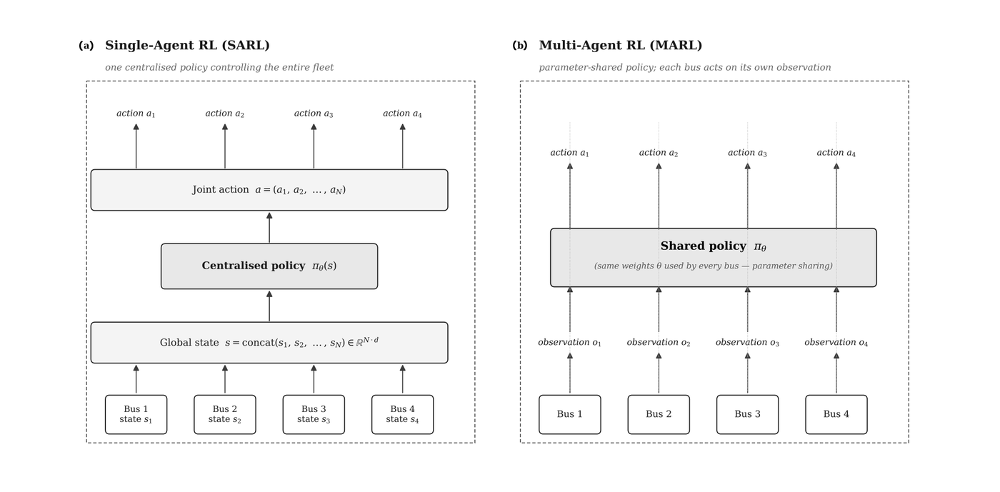
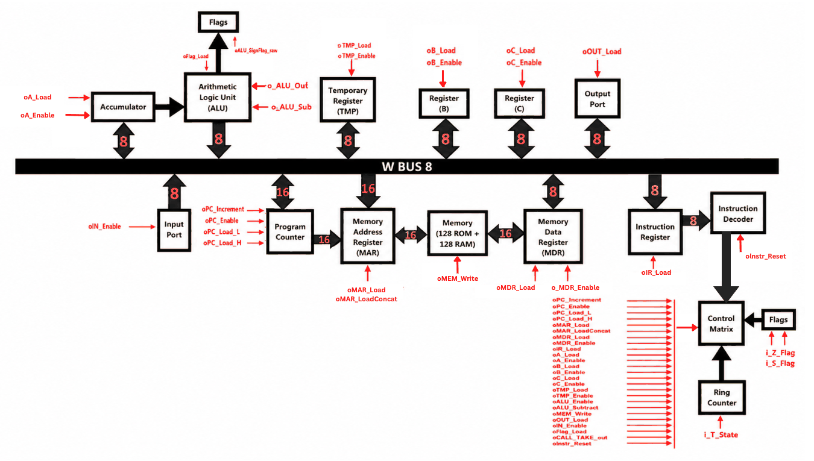
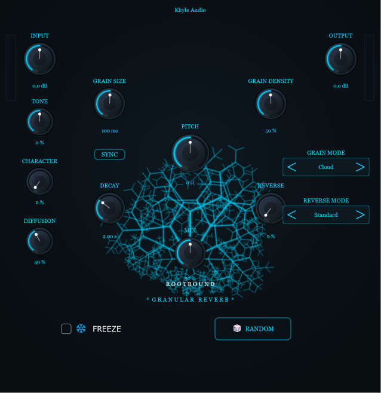
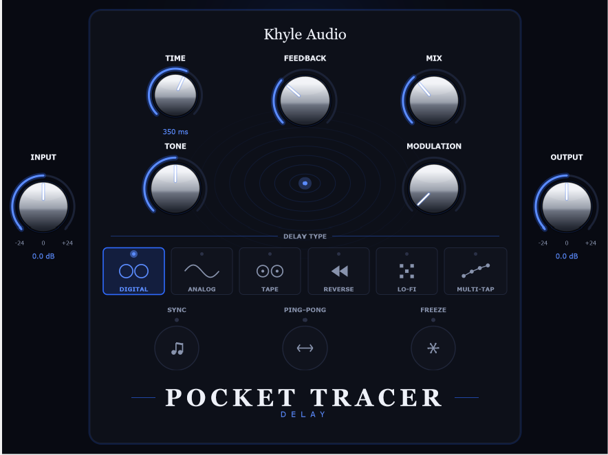
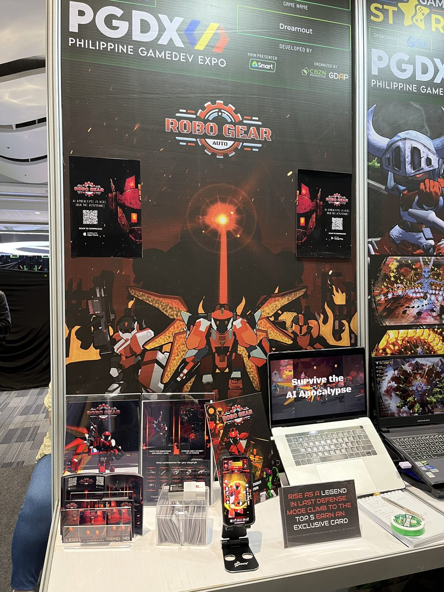
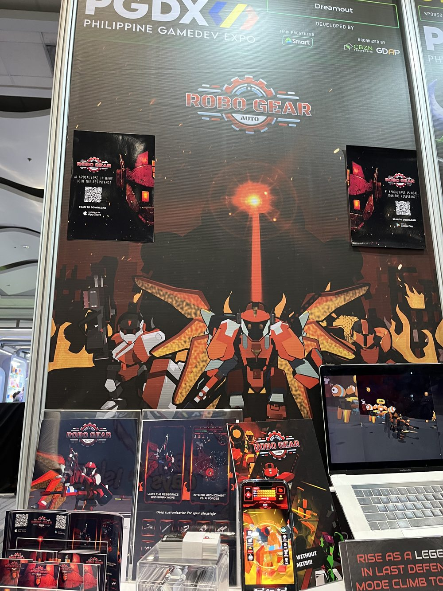

Electronics Engineering student with a strong interest in software engineering, intelligent systems, and digital hardware. Currently building reinforcement learning systems, audio DSP software, and low-level hardware projects that bridge electronics and software.
Working toward a career in software engineering by combining strong engineering fundamentals with hands-on software development.
I'm an Electronics Engineering student at the University of Santo Tomas (2023–present). Before that, I completed the STEM program at Romblon State University, graduating with High Honors while serving as Class President.
While my academic foundation is in electronics, my long-term goal is to become a software engineer, with a particular interest in reinforcement learning, computer architecture, embedded systems, and audio DSP. My EE background is an asset here, not the destination — it gives me a grounding in how things work at a lower level than most software engineers deal with day to day.
My projects range from designing digital hardware at the gate level to my current thesis work on a multi-agent reinforcement learning system for transportation research — the proposal is done and I'm now in the development stage. Outside academics, I build VST3 audio plugins in JUCE/C++, where I implement DSP algorithms and software that model real-world audio processing.
Three deep technical builds, spanning learned control systems, hardware architecture, and audio engineering.
Undergraduate thesis evaluating a Multi-Agent Reinforcement Learning approach — a parameter-sharing Double Deep Q-Network under Centralized Training with Decentralized Execution — for real-time bus holding and stop-skipping control on Metro Manila's EDSA Carousel, a corridor carrying upward of 180,000 daily riders. The policy is trained and stress-tested on a SUMO-calibrated microsimulation under non-ideal conditions: weather-induced travel delays, discrete bus breakdowns, and passenger demand surges.

A full 8-bit microprocessor architecture designed and coded from the gate level up in Verilog HDL for UST's Microprocessor Design course, synthesized in Intel Quartus and verified against ModelSim timing diagrams. Covers an 8-bit data bus, 16-bit addressing, Program Counter, Memory Address/Data Registers, Instruction Register and Decoder, ALU, Accumulator, general-purpose registers, a Flags Register, and I/O ports — all tied together under a custom-designed Instruction Set Architecture and verified through simulation against sample assembly programs. Khalil led the architecture and control unit design, and drove the bulk of the integration debugging — tracing timing and interface issues across nearly every module until the full instruction set ran correctly end to end. This project became his foundation in Verilog and Quartus-based digital design.

A pair of VST3 audio plugins built independently in JUCE/C++, inspired by the sound and feature set of favorite outboard gear and pedals, then reworked and expanded on from there — compiled and tested end to end in Reaper, a digital audio workstation (DAW). Rootbound is a granular reverb built around a custom grain engine and diffusion network, aiming for an Eventide Blackhole-style character. Pocket Tracer is a multi-mode delay plugin. Hear both in action below.


One clean guitar signal, run through Khyle Audio's plugin chain. Toggle between states to hear each plugin's contribution — only one clip plays at a time.
Python programming work from coursework and personal data analysis.
Philippine Game Development Awards Nominee, Best Sound Design — the same year DreamOut won Best Mobile Game. Composed promotional and in-game music as the team's sole sound engineer, working directly with the developers to get audio integrated efficiently into the game, and presented at the 2025 Philippine Game Development Expo.


RoboGear Auto at PGDX (Philippine Game Development Expo)
Produced audio for UST's official student broadcast organization.
Active member of UST's electronics engineering student organization.
Faculty of Engineering. Undergraduate thesis on MARL-based dynamic bus scheduling (ongoing).
Graduated with High Honors. Class President. Champion, University-wide Team Quiz Bee.
Cisco Networking Academy, via University of Santo Tomas.
Cisco Networking Academy, via University of Santo Tomas.
Reach out for questions, collaboration, or a closer look at any of the work above.